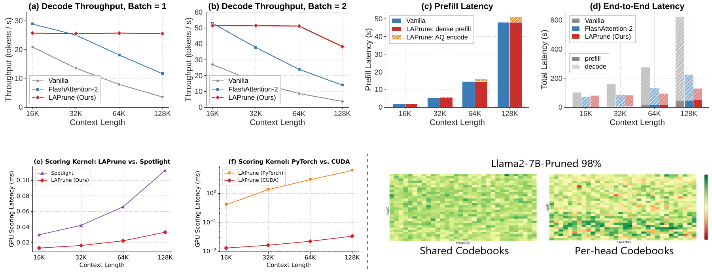
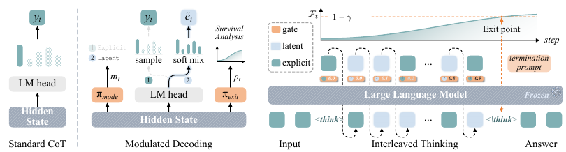
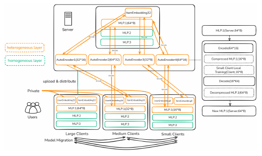
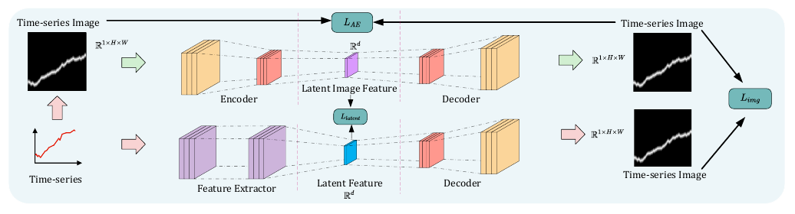
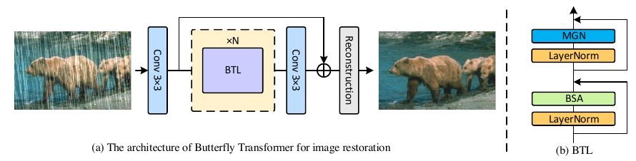
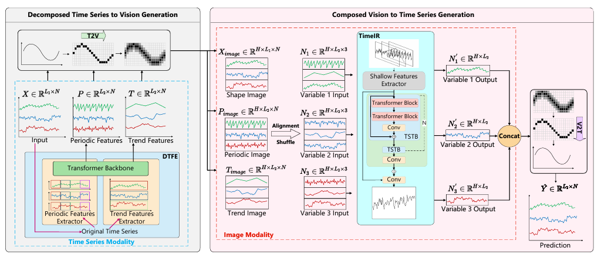
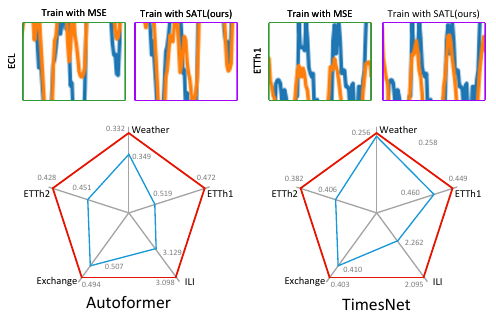
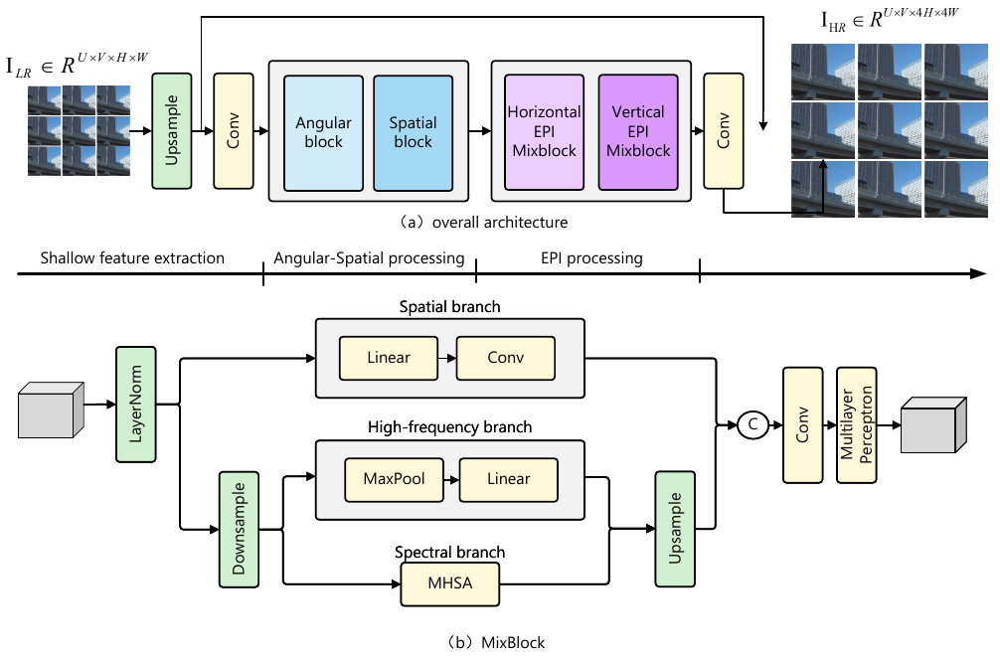
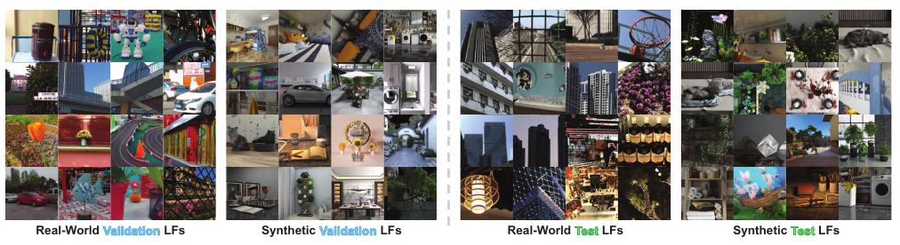
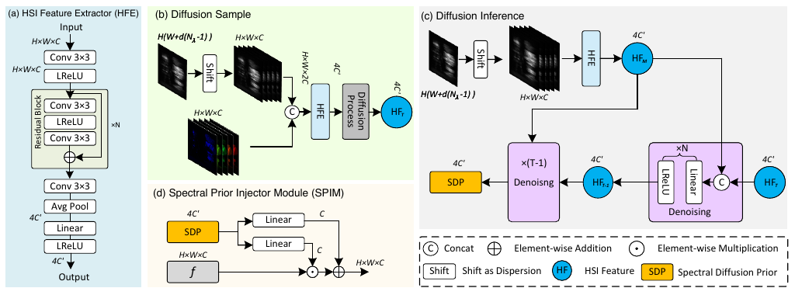

NeurIPS 2026
LAPrune: Logits-Aligned Scoring Proxy for KV Pruning via Vector Quantization
Scores cached tokens against the current query using quantized keys to speed up long-context decoding.

I'm an MSc student in Artificial Intelligence at City University of Hong Kong. I started in low-level vision, then worked on time-series forecasting. My current research focuses on efficient generative models, including long-context language model inference and video generation.
NeurIPS 2026
Scores cached tokens against the current query using quantized keys to speed up long-context decoding.

NeurIPS 2026
Learns when to switch between latent and explicit reasoning and when to stop.

IEEE ICDE 2026
Adapts federated recommender models to device capabilities and transfers personalization across devices.
Paper ↗
IEEE ICASSP 2026
Uses a time-column autoencoder to supervise forecast shape as well as numerical accuracy.
Paper ↗
IEEE ICASSP 2026
Combines spatial and channel-wise attention in a lightweight image restoration network.
Paper ↗
IEEE ICASSP 2026
Decomposes time series into trend and periodic components, then reconstructs forecasts in image space.
Paper ↗
ACM Multimedia 2025
Measures forecast shape in image space and introduces a shape-aware training loss.
Paper ↗
CVPR Workshops 2025 · NTIRE
Combines convolutional and attention-based processing for efficient light-field super-resolution.
Paper ↗
CVPR Workshops 2025 · NTIRE
Reports the benchmark, submitted methods, and results across three light-field super-resolution tracks.
Paper ↗
IEEE SMC 2025
Learns a spectral diffusion prior to recover fine detail in hyperspectral reconstruction.
Paper ↗